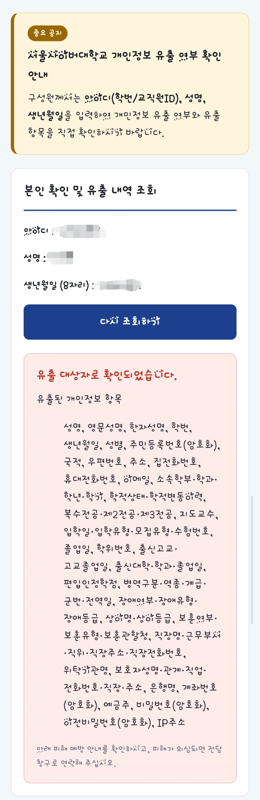

탈탈 털림 ㄷㄷㄷ

탈탈 털림 ㄷㄷㄷ
서울 사이버가 아니라 서울 사이비였구요
다행히도 팬티색깔은 안털렸네
이렇게까지 털렸음 어디 취업되긴 취업됐겠다
암호화라고 해도 은행 계좌번호/비밀번호 까지 다 털렸다고?
은행 계좌번호랑 비밀번호를 왜 대학이 저장하고있는거지..? 아 다시 읽어보니까 비밀번호갸 은행 비밀번호가 아니고 학사 프로그램 비밀번호 같다
등록금 환불? 근데 비빌번호까진 필요없는데 사이버대학이니 교재 결제?
서울사이버대학을 다니고 나를 찾는 사람 많아졌다...
이뤄드렸습니다!
서울사이버대학을 다니고 내 인생이 달라졌다더니 이렇게 달라지는거였냐구
와 ㅋㅋㅋㅋㅋㅋㅋㅋㅋ 진짜 미친수준으로 털렸내
서울사이버대학을다니고 나를 찾는 스팸문자 많아졌다
서울사이버대학을다니고 나를 찾는 사람 많아졌다~
연변쪽에 무수한 악수의 요청
저거 확인하는것조차 바이브코딩으로 대충 뚝딱 만든거까지가 존나 웃김
와 사람 한명 복제하는건 일도 아니겠네
은행계좌번호와 비밀번호 붙어 있어서 그러는데
저 암호가 은행계좌 비밀번호는 아니지???
뭐 털린게 몇줄이야 이게
이 정도면 해킹범이 애미보다 더 잘알겠다 시발 ㅋㅋ
이정도면 그냥 출력해서 준거네?
개인정보는 아날로그로 가는게 맞는듯
나를 찾는 회사(국적 중국, 동남아) 많아졌다~
와 장애여부 저런건 민감정보인데 저게 유출됐네 ㄷㄷ
서울사이버대학을 다니고 나의 개인정보 싹 털렸다~